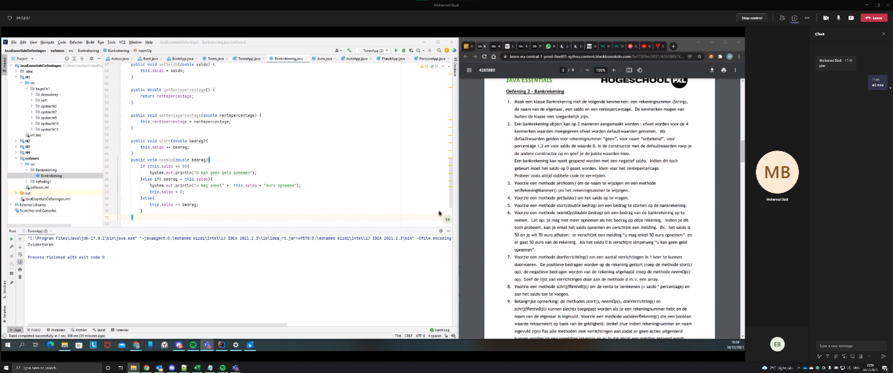
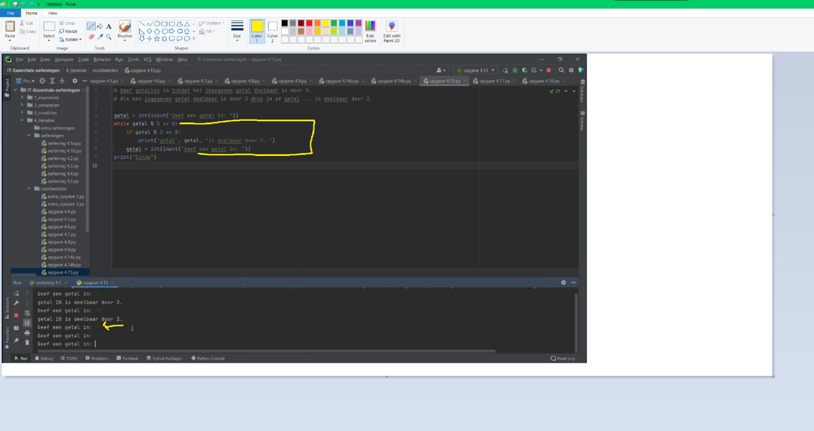

Van 2 december tot 14 december heb ik bijles gegeven aan studenten die begeleiding zochten bij het vak IT-Essentials. Dus ben ik in actie geschoten en heb mezelf als tutor ingeschreven voor het vak IT-Essentials. Hierdoor heb ik zelf de taal Python kunnen herhalen en ik heb iemand geholpen die het dringen nodig had.
Doorheen deze periode heb ik vier sessies gehad met één student en met de andere student heb ik maar 1 sessie gehad. De student waar ik 1 sessie mee heb gehad heeft mij helaas niet meer gecontacteerd na de eerste sessie. Hierna heb zelf het initiatief genomen om contact op te nemen met de student, maar hij heeft me niks laten weten. Ik wou dat ik wist wat de exacte reden hiervoor was, was het omdat hoe ik bijles gaf slecht was of dat de studenten zelf geen zin meer had de reden hiervoor weet ik nog steeds niet. Voor eerste sessie was ik een beetje nerveus, want het was de eerste keer dat ik les aan iemand gaf. In het begin hebben we een kennismakingsgesprek gehouden om elkaar beter te leren kennen en om het ijs te breken. Nadien kwam ik erachter dat de student geen voorkennis had in het programmeren. Hij kwam van een business achtergrond, dus ik begreep waarom hij het moeilijk had om het concept van het programmeren te begrijpen. Wat hij wel goed kon was het begrijpen van de theorie, maar dit is niet genoeg om te kunnen programmeren. Mijn gouden tip voor hem was dat de enige manier om te leren programmeren is om door oefeningen te maken en zo veel mogelijk ervaring op te doen. Hierna zijn we samen ingedoken in de oefeningen van IT-Essentials. Tijdens de oefening heb ik gezien dat de student de opgave goed kan begrijpen, maar wanneer het kwam op het programmeren maakte hij veel fouten. Om hem beter te helpen heb ik het denkproces uitgelegd over hoe je een opgave of een probleem het beste kan aanpakken. Door middel met Microsoft Teams heeft hij zijn scherm gedeeld en zo heb ik hem kunnen helpen met de oefeningen. Tijdens de tweede sessie wou de student verder werken aan de oefeningen. Mijn aanpak voor dit was om de studenten genoeg tijd te geven om de oefeningen zelf te laten oplossen en daarna als hij het nodig had hem ook te helpen. Bij de gemakkelijke oefeningen had hij geen hulp nodig. Hierdoor zag ik dat hij de basisprincipes al door had en was ik al tutor trots op hem. De derde sessie zijn we overgeschakeld naar de moeilijkere oefeningen waar de student kennis begon te maken met if-clausule, arrays en for loops. Bij het begrijpen van de if-clausule had geen probleem dat ging zeer vlot, maar het begrijpen van for loops was een traag proces. Ik heb met het behulp van de tool Paint mijn best gedaan om een for loop uit te leggen. Na het uitleggen had ik hem gevraagd om het proces opnieuw aan mij uit te leggen zodat ik zeker wist dat hij het concept begreep. Voor de laatste sessie net voor de examens hebben we nog eens samengezeten. Voor deze sessie hebben we de proefexamen opgelost. Natuurlijk heb ik hem eerst alleen laten werken om te zien of hij klaar was voor het examen. Af en toe moest ik wel inspringen, want hij begon de foute richting in te gaan. Als tutor heb ik hem dan op het juiste pad gezet en uitgelegd wat hij fout deed. Ten slotte zag ik dat hij veel vordering had tot dit punt en dat gaf me een gevoel van volwaardigheid als een tutor.
 Study Buddy was iets nieuws voor mij, maar ik ben blij dat ik het gedaan heb. Ik heb mijn medestudenten kunnen helpen en heb zelf veel bijgeleerd. Ik had nooit gedacht dat ik zelf les zou geven aan anderen terwijl ik zelf elke dag aan het bijleren ben. Ik was mijn schoolwerk, IT-Project en Study Buddy samen aan het balanceren. Hierdoor vond ik het administratief werk wel minder leuk om te doen. Ik vond het wel spijtig dat alles sessies online waren, want ik zou denken dat fysieke sessies beter zouden zijn voor mij en de student. We hebben deze beslissing zo genomen omdat er opdat moment de coronacijfers hoog lagen. Daarlangs heeft één van de studenten na de eerste sessie mij niet meer gestuurd. Dit heeft me het gevoel gegeven dat ik mijn taak als tutor niet goed deed, maar bij de andere student heb ik vaak positieve feedback gekregen zoals: dat ik iets complex heel simplistisch kan uitleggen. Deze vaardigheid heb ik dan ook toegepast in mijn andere projecten om mijn teamleden te helpen. In het IT-Project heb ik de taak gekregen als lead frontend developer vanwege mijn vaardigheden. Hierbij denk ik dat mijn rol als tutor mij geholpen heeft in het verkrijgen van deze rol. De reden dat ik dit heb opgenomen in mijn portfolio is omdat ik ook een eerstejaarsstudent was. Hiermee bedoel ik dat ik ook in hun schoenen stond toen ik begon aan mijn opleiding. Tijdens mijn eerste jaar vond ik het moeilijk om hulp te vragen. Hierdoor wou ik me graag inzetten om mijn medestudenten te adviseren en te begeleiden met hun moeilijkheden. Algemeen vond ik het een positieve ervaring. Ik heb geleerd om geduldig te zijn met de studenten en om realistisch te blijven. Door deze ervaring zou ik het in ogen zien om een leerkracht te worden in de toekomst. Het samenwerken en elkaar helpen vind ik dat elke IT’er moet doen.